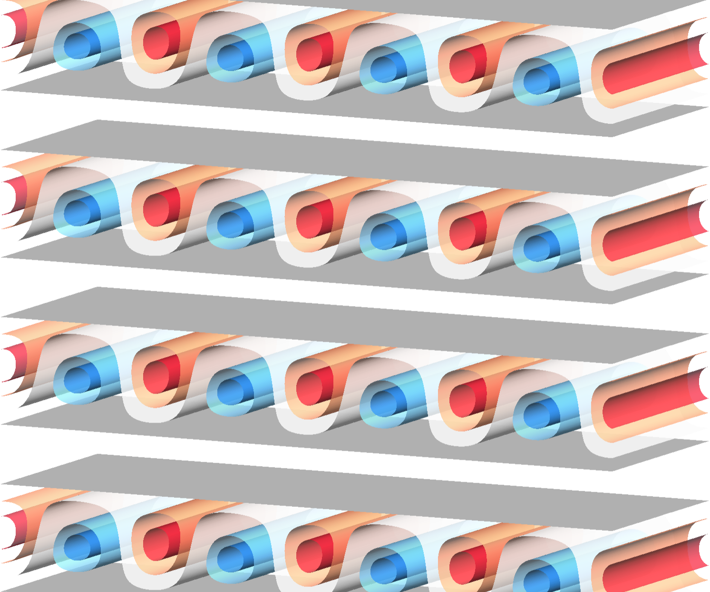

M. Z. Hossain, D. Floryan, and J. M. Floryan, Journal of Fluid Mechanics (2012), 713, 398–419
doi: 10.1017/jfm.2012.465
Heating the wall of a channel with a special pattern creates separation bubbles, coloured by sense of rotation, that separate the main stream (in white) from the wall. Drag reduction of up to 87% compared to an unheated wall can be achieved.
It is demonstrated that a significant drag reduction for pressure-driven flows can be realized by applying spatially distributed heating. The heating creates separation bubbles that separate the stream from the bounding walls and, at the same time, alter the distribution of the Reynolds stress, thereby providing a propulsive force. The strength of this effect is of practical interest for heating with wavenumbers α = O(1) and for flows with small Reynolds numbers and, thus, it is of potential interest for applications in micro-channels. Explicit results given for a very simple sinusoidal heating demonstrate that the drag-reducing effect increases proportionally to the second power of the heating intensity. This increase saturates if the heating becomes too intense. Drag reduction decreases as α4 when the heating wavenumber becomes too small, and as α-7 when the heating wavenumber becomes too large; this decrease is due to the reduction in the magnitude of the Reynolds stress. The drag reduction can reach up to 87% for the heating intensities of interest and heating patterns corresponding to the most effective heating wavenumber.